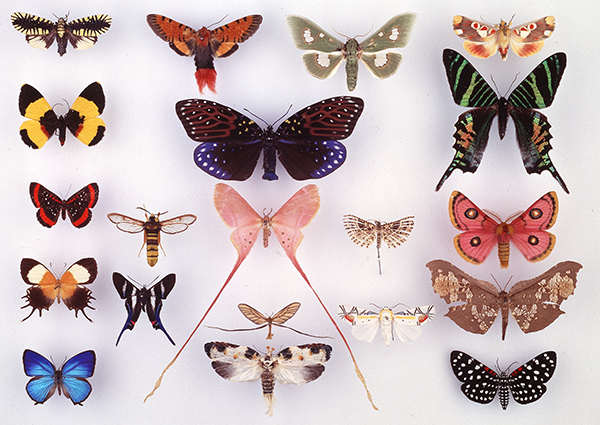

Launching February 2019
We are delighted to announce that a fourth SYNTHESYS project (SYNTHESYS+) was favourably evaluated by the EC in August 2018 and preparations are currently underway for SYNTHESYS+ to formally launch in February 2019, running until January 2023.
If you would like to sign up to hear more about SYNTHESYS+, including the launch of the Transnational Access scheme planned for February 2019, please sign up here.
